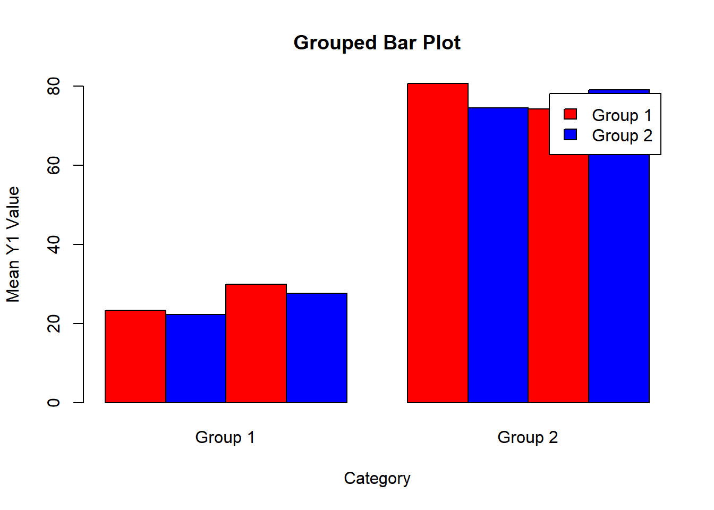
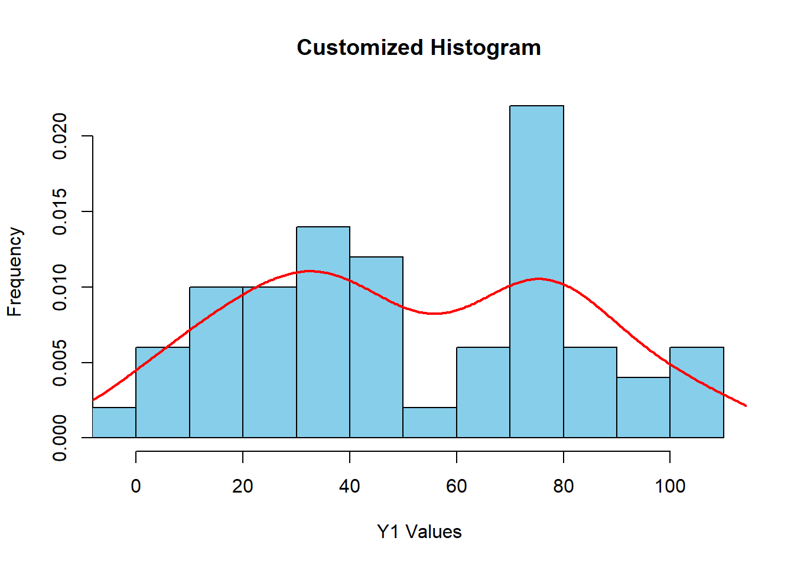
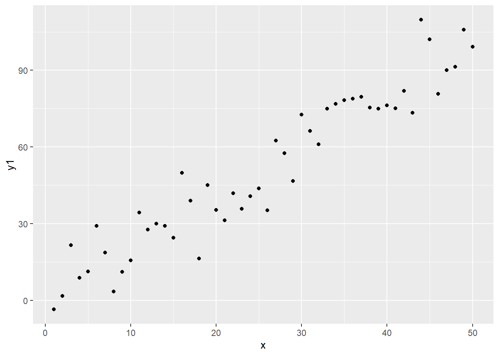
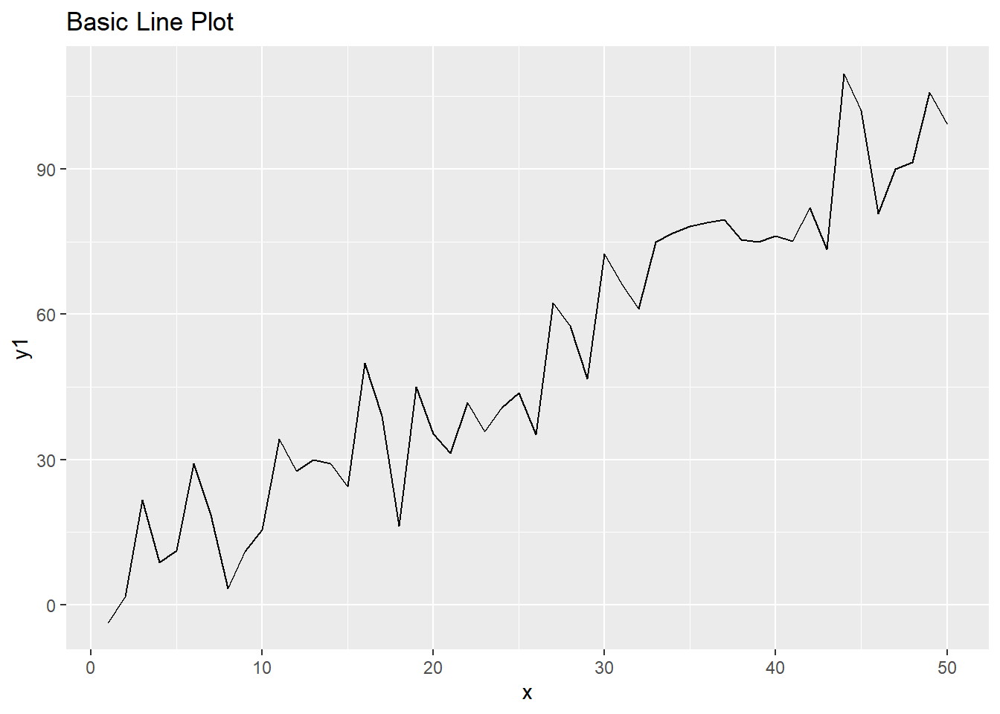
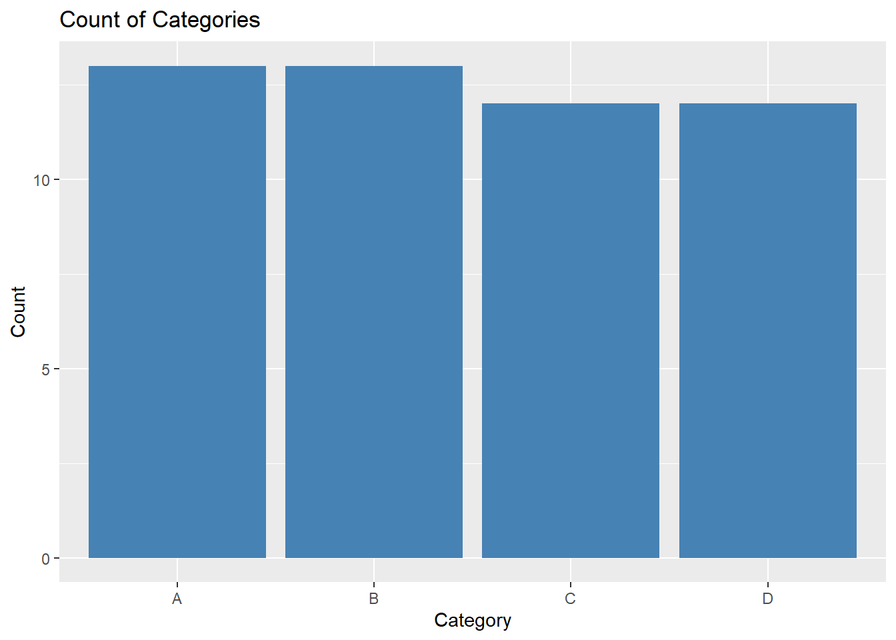

Introduction to Data Visualization in R
Data visualization is a critical part of data analysis. It helps you understand patterns, identify outliers, and communicate your findings effectively. R offers several powerful tools for data visualization, from base R plotting functions to sophisticated packages like ggplot2.
In this module, we’ll explore:
- Base R plotting system
- Creating common plot types (scatterplots, line plots, bar charts, histograms, boxplots)
- Customizing plots (titles, labels, colors, legends)
- The ggplot2 system for data visualization
- Creating multiple plots and advanced visualizations
Let’s start by creating some sample data that we’ll use throughout this module:
# Set seed for reproducibility
set.seed(123)
# Create sample data
x <- 1:50
y1 <- 2*x + rnorm(50, mean = 0, sd = 10)
y2 <- 50 + 0.5*x^2 + rnorm(50, mean = 0, sd = 50)
category <- rep(c("A", "B", "C", "D"), length.out = 50)
group <- rep(c("Group 1", "Group 2"), each = 25)
# Create a data frame
plot_data <- data.frame(
x = x,
y1 = y1,
y2 = y2,
category = category,
group = group
)
# Display the first few rows
head(plot_data)Base R Plotting System
Basic Plotting Functions
R’s base plotting system provides a simple and flexible way to create a wide variety of plots.
The plot() Function
The plot() function is the most basic plotting function
in R:
# Create a basic scatterplot
plot(x, y1)# Add more information
plot(x, y1,
main = "Basic Scatterplot",
xlab = "X Values",
ylab = "Y Values",
pch = 19, # Point symbol (filled circles)
col = "blue")Adding to Existing Plots
You can add elements to an existing plot:
# Create the initial plot
plot(x, y1,
main = "Adding to a Plot",
xlab = "X Values",
ylab = "Y Values",
pch = 19,
col = "blue")
# Add points from another dataset
points(x, y2, pch = 17, col = "red")
# Add a line
lines(x, 2*x, col = "green", lwd = 2)
# Add a legend
legend("topleft",
legend = c("Dataset 1", "Dataset 2", "Line y = 2x"),
col = c("blue", "red", "green"),
pch = c(19, 17, NA),
lty = c(NA, NA, 1),
lwd = c(NA, NA, 2))Common Plot Types in Base R
Let’s explore the most commonly used plot types in R’s base plotting system.
Scatterplot
# Basic scatterplot
plot(plot_data$x, plot_data$y1,
main = "Scatterplot",
xlab = "X Values",
ylab = "Y Values",
pch = 19,
col = "blue")Line Plot
# Line plot
plot(plot_data$x, plot_data$y1,
main = "Line Plot",
xlab = "X Values",
ylab = "Y Values",
type = "l", # "l" for line
col = "blue",
lwd = 2)
# Add another line
lines(plot_data$x, plot_data$y2,
col = "red",
lwd = 2)
# Add a legend
legend("topleft",
legend = c("Y1", "Y2"),
col = c("blue", "red"),
lwd = 2)Bar Plot
# Count occurrences of each category
category_counts <- table(plot_data$category)
# Create a bar plot
barplot(category_counts,
main = "Bar Plot of Categories",
xlab = "Category",
ylab = "Count",
col = c("red", "green", "blue", "orange"),
border = "black")# Create a bar plot with grouped data
grouped_data <- aggregate(y1 ~ category + group, data = plot_data, FUN = mean)
grouped_matrix <- matrix(grouped_data$y1, nrow = 4, ncol = 2)
colnames(grouped_matrix) <- unique(grouped_data$group)
rownames(grouped_matrix) <- unique(grouped_data$category)
barplot(grouped_matrix,
main = "Grouped Bar Plot",
xlab = "Category",
ylab = "Mean Y1 Value",
col = c("red", "blue"),
beside = TRUE, # Group bars side by side
legend.text = colnames(grouped_matrix))
Histogram
# Basic histogram
hist(plot_data$y1,
main = "Histogram of Y1",
xlab = "Y1 Values",
ylab = "Frequency",
col = "skyblue",
border = "black")# Histogram with more customization
hist(plot_data$y1,
main = "Customized Histogram",
xlab = "Y1 Values",
ylab = "Frequency",
col = "skyblue",
border = "black",
breaks = 15, # Number of bins
probability = TRUE, # Show density instead of counts
xlim = c(min(plot_data$y1), max(plot_data$y1)))
# Add a density curve
lines(density(plot_data$y1), col = "red", lwd = 2)
Boxplot
# Basic boxplot
boxplot(plot_data$y1,
main = "Boxplot of Y1",
ylab = "Y1 Values",
col = "lightgreen")# Grouped boxplot
boxplot(y1 ~ category, data = plot_data,
main = "Boxplot by Category",
xlab = "Category",
ylab = "Y1 Values",
col = c("red", "green", "blue", "orange"))# Two-factor boxplot
boxplot(y1 ~ category + group, data = plot_data,
main = "Boxplot by Category and Group",
xlab = "Category and Group",
ylab = "Y1 Values",
col = c("lightblue", "lightgreen"),
las = 2) # Rotate x-axis labelsExercise 1: Basic Plotting with Base R
For this exercise, we’ll use the built-in mtcars
dataset. Complete the following tasks:
- Create a scatterplot of
mpg(miles per gallon) againstwt(weight) from the mtcars dataset - Add a title, axis labels, and use blue filled circles as points
- Add a red line showing the best fit line (hint: use
lm()andabline()) - Create a boxplot showing
mpgby number of cylinders (cyl) - Create a histogram of
mpgwith 10 bins, a blue fill, and appropriate labels - Create a side-by-side bar plot showing the average
mpgfor each combination of cylinders (cyl) and transmission type (am)
# Write your code here# 1. Create a scatterplot of mpg vs wt
plot(mtcars$wt, mtcars$mpg,
main = "MPG vs Weight",
xlab = "Weight (1000 lbs)",
ylab = "Miles Per Gallon",
pch = 19, # Filled circles
col = "blue")
# 2. Add a best fit line
fit <- lm(mpg ~ wt, data = mtcars)
abline(fit, col = "red", lwd = 2)
# 3. Create a boxplot of mpg by cylinders
boxplot(mpg ~ cyl, data = mtcars,
main = "MPG by Number of Cylinders",
xlab = "Number of Cylinders",
ylab = "Miles Per Gallon",
col = c("orange", "green", "purple"))
# 4. Create a histogram of mpg
hist(mtcars$mpg,
breaks = 10,
main = "Histogram of MPG",
xlab = "Miles Per Gallon",
ylab = "Frequency",
col = "skyblue",
border = "black")
# 5. Create a side-by-side bar plot of mpg by cyl and am
# Calculate means
means <- aggregate(mpg ~ cyl + am, data = mtcars, FUN = mean)
# Reshape data for barplot
# First, make sure cyl and am are factors with appropriate labels
means$cyl <- factor(means$cyl, levels = c(4, 6, 8), labels = c("4 cyl", "6 cyl", "8 cyl"))
means$am <- factor(means$am, levels = c(0, 1), labels = c("Automatic", "Manual"))
# Create a matrix for the barplot
bar_matrix <- matrix(means$mpg, nrow = 3, ncol = 2)
rownames(bar_matrix) <- levels(means$cyl)
colnames(bar_matrix) <- levels(means$am)
# Create the barplot
barplot(bar_matrix,
main = "Average MPG by Cylinders and Transmission",
xlab = "Number of Cylinders",
ylab = "Average MPG",
col = c("lightblue", "salmon"),
beside = TRUE,
legend.text = colnames(bar_matrix))Customizing Plots
Let’s explore ways to customize your plots to make them more informative and visually appealing.
Plot Customization Options
# Set up the plotting area
plot(plot_data$x, plot_data$y1,
main = "Customized Plot",
xlab = "X Values",
ylab = "Y Values",
pch = 19, # Point symbol (filled circles)
col = "blue",
cex = 0.8, # Point size
type = "p", # Type: "p" for points
xlim = c(0, 60), # X-axis limits
ylim = c(0, 150), # Y-axis limits
las = 1, # Orientation of axis labels (1: horizontal)
bty = "l") # Box type ("l" for L-shaped)
# Add a grid
grid(col = "gray", lty = "dotted")
# Add text
text(10, 140, "Custom Text", col = "red", font = 2)
# Add a custom legend
legend("topleft",
legend = c("Original Data"),
col = "blue",
pch = 19,
bty = "n", # No box
cex = 0.8) # Text size
Multiple Plots
You can display multiple plots in a single figure using the
par() function:
# Set up a 2x2 plotting area
par(mfrow = c(2, 2))
# Plot 1: Scatterplot
plot(plot_data$x, plot_data$y1,
main = "Scatterplot",
xlab = "X Values",
ylab = "Y1 Values",
pch = 19,
col = "blue")
# Plot 2: Line plot
plot(plot_data$x, plot_data$y2,
main = "Line Plot",
xlab = "X Values",
ylab = "Y2 Values",
type = "l",
col = "red",
lwd = 2)
# Plot 3: Histogram
hist(plot_data$y1,
main = "Histogram of Y1",
xlab = "Y1 Values",
ylab = "Frequency",
col = "skyblue")
# Plot 4: Boxplot
boxplot(y1 ~ category, data = plot_data,
main = "Boxplot by Category",
xlab = "Category",
ylab = "Y1 Values",
col = c("red", "green", "blue", "orange"))# Reset to default 1x1 plot
par(mfrow = c(1, 1))Custom Colors
R offers many ways to work with colors:
# Set up a 1x2 plotting area
par(mfrow = c(1, 2))
# Plot with built-in color names
categories <- unique(plot_data$category)
colors <- c("red", "blue", "green", "purple")
plot(plot_data$x, plot_data$y1,
main = "Basic Colors",
xlab = "X Values",
ylab = "Y Values",
pch = 19,
col = colors[as.numeric(factor(plot_data$category))])
legend("topleft",
legend = categories,
col = colors,
pch = 19,
title = "Category")
# Plot with RColorBrewer palette
library(RColorBrewer)
brewer_colors <- brewer.pal(4, "Set1")
plot(plot_data$x, plot_data$y1,
main = "RColorBrewer Colors",
xlab = "X Values",
ylab = "Y Values",
pch = 19,
col = brewer_colors[as.numeric(factor(plot_data$category))])
legend("topleft",
legend = categories,
col = brewer_colors,
pch = 19,
title = "Category")# Reset to default 1x1 plot
par(mfrow = c(1, 1))Saving Plots
You can save your plots to various file formats:
# Open a PNG graphics device
png("my_plot.png", width = 800, height = 600)
# Create your plot
plot(plot_data$x, plot_data$y1,
main = "Saved Plot",
xlab = "X Values",
ylab = "Y Values",
pch = 19,
col = "blue")
# Close the graphics device to save the file
dev.off()
# Other available formats include:
# pdf(), jpeg(), tiff(), svg(), etc.Exercise 2: Customizing Plots
Using the built-in iris dataset, complete the following
tasks:
- Create a customized scatterplot of Sepal.Length vs Sepal.Width with:
- Points colored by Species
- A custom title and axis labels
- A legend for the species
- Custom point symbols (pch) for each species
- Grid lines
- Create a 2x2 multi-panel figure that includes:
- Scatterplot of Sepal.Length vs Sepal.Width
- Scatterplot of Petal.Length vs Petal.Width
- Boxplot of Sepal.Length by Species
- Histogram of Petal.Length
- Create a barplot showing the mean Sepal.Length by Species using colors from the RColorBrewer “Pastel1” palette
# Write your code here# Load required packages
library(RColorBrewer)
# 1. Customized scatterplot
# Create a custom color palette
species_colors <- c("setosa" = "red", "versicolor" = "blue", "virginica" = "green")
species_pch <- c("setosa" = 16, "versicolor" = 17, "virginica" = 18)
# Create the scatterplot
plot(iris$Sepal.Width, iris$Sepal.Length,
main = "Sepal Length vs Width by Species",
xlab = "Sepal Width (cm)",
ylab = "Sepal Length (cm)",
pch = species_pch[iris$Species],
col = species_colors[iris$Species],
cex = 1.2)
# Add a grid
grid(col = "gray", lty = "dotted")
# Add a legend
legend("topright",
legend = levels(iris$Species),
col = species_colors[levels(iris$Species)],
pch = species_pch[levels(iris$Species)],
title = "Species")
# 2. Create a 2x2 multi-panel figure
par(mfrow = c(2, 2))
# Plot 1: Scatterplot of Sepal.Length vs Sepal.Width
plot(iris$Sepal.Width, iris$Sepal.Length,
main = "Sepal Length vs Width",
xlab = "Sepal Width (cm)",
ylab = "Sepal Length (cm)",
pch = 19,
col = species_colors[iris$Species])
# Plot 2: Scatterplot of Petal.Length vs Petal.Width
plot(iris$Petal.Width, iris$Petal.Length,
main = "Petal Length vs Width",
xlab = "Petal Width (cm)",
ylab = "Petal Length (cm)",
pch = 19,
col = species_colors[iris$Species])
# Plot 3: Boxplot of Sepal.Length by Species
boxplot(Sepal.Length ~ Species, data = iris,
main = "Sepal Length by Species",
xlab = "Species",
ylab = "Sepal Length (cm)",
col = species_colors[levels(iris$Species)])
# Plot 4: Histogram of Petal.Length
hist(iris$Petal.Length,
main = "Histogram of Petal Length",
xlab = "Petal Length (cm)",
ylab = "Frequency",
col = "skyblue",
breaks = 10)
# Reset to default 1x1 plot
par(mfrow = c(1, 1))
# 3. Barplot with RColorBrewer colors
# Calculate mean Sepal.Length by Species
mean_sepal_length <- aggregate(Sepal.Length ~ Species, data = iris, FUN = mean)
# Get colors from RColorBrewer
pastel_colors <- brewer.pal(3, "Pastel1")
# Create the barplot
barplot(mean_sepal_length$Sepal.Length,
main = "Mean Sepal Length by Species",
xlab = "Species",
ylab = "Mean Sepal Length (cm)",
names.arg = mean_sepal_length$Species,
col = pastel_colors,
border = "black")Introduction to ggplot2
The ggplot2 package is a powerful and flexible system
for creating plots in R, based on the Grammar of Graphics.
Basic ggplot2 Concepts
ggplot2 builds plots layer by layer:
# Load the ggplot2 package
library(ggplot2)
# Create a basic ggplot
ggplot(plot_data, aes(x = x, y = y1)) +
geom_point()
# Add more layers and customization
ggplot(plot_data, aes(x = x, y = y1)) +
geom_point(aes(color = category), size = 3) +
labs(title = "Basic ggplot2 Scatterplot",
x = "X Values",
y = "Y1 Values",
color = "Category") +
theme_minimal()Common Plot Types in ggplot2
Scatterplot
# Basic scatterplot
ggplot(plot_data, aes(x = x, y = y1)) +
geom_point() +
labs(title = "Basic Scatterplot")# Scatterplot with groups and smoothing
ggplot(plot_data, aes(x = x, y = y1, color = group, shape = category)) +
geom_point(size = 3, alpha = 0.7) +
geom_smooth(method = "lm", se = TRUE) +
labs(title = "Scatterplot with Groups and Trend Lines",
x = "X Values",
y = "Y1 Values") +
theme_light()## `geom_smooth()` using formula = 'y ~ x'Line Plot
# Basic line plot
ggplot(plot_data, aes(x = x, y = y1)) +
geom_line() +
labs(title = "Basic Line Plot")
# Line plot with groups
ggplot(plot_data, aes(x = x, y = y1, color = group, linetype = group)) +
geom_line(size = 1) +
labs(title = "Line Plot with Groups",
x = "X Values",
y = "Y1 Values") +
theme_bw()## Warning: Using `size` aesthetic for lines was deprecated in ggplot2 3.4.0.
## ℹ Please use `linewidth` instead.
## This warning is displayed once every 8 hours.
## Call `lifecycle::last_lifecycle_warnings()` to see where this warning was
## generated.Bar Plot
# Count of categories
ggplot(plot_data, aes(x = category)) +
geom_bar(fill = "steelblue") +
labs(title = "Count of Categories",
x = "Category",
y = "Count")
# Mean of y1 by category and group
ggplot(plot_data, aes(x = category, y = y1, fill = group)) +
stat_summary(fun = mean, geom = "bar", position = "dodge") +
labs(title = "Mean Y1 by Category and Group",
x = "Category",
y = "Mean Y1 Value") +
scale_fill_brewer(palette = "Set1")Histogram and Density Plot
# Basic histogram
ggplot(plot_data, aes(x = y1)) +
geom_histogram(bins = 15, fill = "steelblue", color = "black") +
labs(title = "Histogram of Y1",
x = "Y1 Values",
y = "Count")# Histogram with density curve
ggplot(plot_data, aes(x = y1)) +
geom_histogram(aes(y = ..density..), bins = 15,
fill = "lightblue", color = "black") +
geom_density(alpha = 0.2, fill = "red") +
labs(title = "Histogram with Density Curve",
x = "Y1 Values",
y = "Density")## Warning: The dot-dot notation (`..density..`) was deprecated in ggplot2 3.4.0.
## ℹ Please use `after_stat(density)` instead.
## This warning is displayed once every 8 hours.
## Call `lifecycle::last_lifecycle_warnings()` to see where this warning was
## generated.# Histogram by group
ggplot(plot_data, aes(x = y1, fill = group)) +
geom_histogram(position = "identity", alpha = 0.5, bins = 15) +
labs(title = "Histogram by Group",
x = "Y1 Values",
y = "Count") +
scale_fill_manual(values = c("blue", "red"))Boxplot
# Basic boxplot
ggplot(plot_data, aes(y = y1)) +
geom_boxplot(fill = "lightgreen") +
labs(title = "Basic Boxplot",
y = "Y1 Values")# Boxplot by category
ggplot(plot_data, aes(x = category, y = y1, fill = category)) +
geom_boxplot() +
labs(title = "Boxplot by Category",
x = "Category",
y = "Y1 Values") +
scale_fill_brewer(palette = "Pastel1")# Boxplot with points
ggplot(plot_data, aes(x = category, y = y1, fill = category)) +
geom_boxplot(alpha = 0.7) +
geom_jitter(width = 0.2, alpha = 0.5) +
labs(title = "Boxplot with Data Points",
x = "Category",
y = "Y1 Values") +
scale_fill_brewer(palette = "Set2") +
theme_minimal()Faceting in ggplot2
Faceting allows you to create separate plots for subsets of your data:
# Facet by group
ggplot(plot_data, aes(x = x, y = y1, color = category)) +
geom_point(size = 2) +
facet_wrap(~ group) +
labs(title = "Faceted Plot by Group",
x = "X Values",
y = "Y1 Values") +
theme_bw()# Facet grid
ggplot(plot_data, aes(x = x, y = y1)) +
geom_point(aes(color = category), size = 2) +
geom_smooth(method = "lm", se = FALSE, color = "black") +
facet_grid(group ~ category) +
labs(title = "Facet Grid by Group and Category",
x = "X Values",
y = "Y1 Values") +
theme_light()## `geom_smooth()` using formula = 'y ~ x'Customizing ggplot2 Themes
ggplot2 offers various themes and customization options:
# Basic plot with default theme
p <- ggplot(plot_data, aes(x = x, y = y1, color = category)) +
geom_point(size = 2) +
labs(title = "Default Theme")
p# Same plot with different themes
p + theme_minimal() + labs(title = "Minimal Theme")p + theme_classic() + labs(title = "Classic Theme")p + theme_dark() + labs(title = "Dark Theme")p + theme_bw() + labs(title = "Black and White Theme")# Custom theme
p +
theme(
plot.title = element_text(size = 16, face = "bold", hjust = 0.5),
axis.title = element_text(size = 12, face = "italic"),
axis.text = element_text(size = 10),
legend.position = "bottom",
legend.title = element_text(size = 12),
panel.background = element_rect(fill = "lightyellow"),
panel.grid.major = element_line(color = "gray", linetype = "dashed"),
panel.grid.minor = element_blank()
) +
labs(title = "Custom Theme")Exercise 3: Creating Plots with ggplot2
Using the built-in mpg dataset (which comes with
ggplot2), complete the following tasks:
- Create a scatterplot of highway mileage (
hwy) vs engine displacement (displ) with:- Points colored by vehicle class (
class) - Points sized by city mileage (
cty) - A title and proper axis labels
- A smoothing line to show the trend
- Points colored by vehicle class (
- Create a bar chart showing the average highway mileage
(
hwy) by vehicle class (class) with:- Bars filled by a color from the “Set2” palette
- Error bars showing the standard error
- Proper labels and titles
- A minimal theme
- Create a faceted plot that:
- Shows the relationship between engine displacement
(
displ) and highway mileage (hwy) - Has separate panels for each number of cylinders
(
cyl) - Includes points colored by drive train (
drv) - Includes a linear regression line for each panel
- Uses a clean, professional theme
- Shows the relationship between engine displacement
(
# Write your code here# Load the ggplot2 package
library(ggplot2)
# Access the mpg dataset
data(mpg)
# 1. Scatterplot of hwy vs displ
ggplot(mpg, aes(x = displ, y = hwy)) +
geom_point(aes(color = class, size = cty), alpha = 0.7) +
geom_smooth(method = "loess", color = "black", se = TRUE) +
labs(title = "Highway Mileage vs Engine Displacement",
subtitle = "Sized by City Mileage, Colored by Vehicle Class",
x = "Engine Displacement (liters)",
y = "Highway Mileage (mpg)",
color = "Vehicle Class",
size = "City MPG") +
theme_minimal()
# 2. Bar chart of average hwy by class
# First, calculate the mean and standard error
library(dplyr)
class_summary <- mpg %>%
group_by(class) %>%
summarize(
mean_hwy = mean(hwy),
se_hwy = sd(hwy) / sqrt(n())
)
# Create the bar chart
ggplot(class_summary, aes(x = class, y = mean_hwy, fill = class)) +
geom_bar(stat = "identity") +
geom_errorbar(aes(ymin = mean_hwy - se_hwy, ymax = mean_hwy + se_hwy),
width = 0.2) +
labs(title = "Average Highway Mileage by Vehicle Class",
x = "Vehicle Class",
y = "Average Highway MPG",
fill = "Vehicle Class") +
scale_fill_brewer(palette = "Set2") +
theme_minimal() +
theme(legend.position = "none") # Remove legend since it's redundant
# 3. Faceted plot by cylinders
ggplot(mpg, aes(x = displ, y = hwy, color = drv)) +
geom_point(alpha = 0.7) +
geom_smooth(method = "lm", se = FALSE) +
facet_wrap(~ cyl, labeller = label_both) +
labs(title = "Highway Mileage vs Engine Displacement by Cylinders",
subtitle = "Colored by Drive Train",
x = "Engine Displacement (liters)",
y = "Highway Mileage (mpg)",
color = "Drive Train") +
scale_color_brewer(palette = "Set1",
labels = c("4-wheel", "Front-wheel", "Rear-wheel")) +
theme_light() +
theme(
strip.background = element_rect(fill = "lightblue"),
strip.text = element_text(face = "bold"),
plot.title = element_text(hjust = 0.5),
plot.subtitle = element_text(hjust = 0.5)
)Additional Visualization Packages in R
While base R and ggplot2 are the most common plotting systems in R, there are other packages that offer unique visualization capabilities.
The lattice Package
The lattice package provides a powerful system for
creating trellis plots:
# Load the lattice package
library(lattice)
# Create a basic scatterplot
xyplot(y1 ~ x, data = plot_data,
main = "Basic Lattice Scatterplot",
xlab = "X Values",
ylab = "Y1 Values",
pch = 19,
col = "blue")# Create a scatterplot with groups
xyplot(y1 ~ x | category, data = plot_data,
main = "Scatterplot Faceted by Category",
xlab = "X Values",
ylab = "Y1 Values",
pch = 19,
col = "blue",
layout = c(4, 1)) # 4 columns, 1 row# Create a grouped boxplot
bwplot(y1 ~ category | group, data = plot_data,
main = "Boxplot by Category and Group",
xlab = "Category",
ylab = "Y1 Values",
fill = "lightblue",
layout = c(2, 1)) # 2 columns, 1 rowInteractive Visualizations
R also offers packages for creating interactive visualizations, such
as plotly and highcharter:
# Using plotly (not run here)
library(plotly)
# Convert a ggplot to an interactive plot
p <- ggplot(plot_data, aes(x = x, y = y1, color = category)) +
geom_point() +
labs(title = "Interactive Scatterplot")
ggplotly(p)
# Create a plotly plot directly
plot_ly(plot_data, x = ~x, y = ~y1, color = ~category, type = "scatter", mode = "markers")Exercise 4: Advanced Visualization Techniques
For this exercise, we’ll use the built-in diamonds
dataset from ggplot2 to create some advanced visualizations. Complete
the following tasks:
Create a scatterplot matrix using the
pairs()function for the numeric variables in thediamondsdataset (carat, depth, table, price, x, y, z)Create a lattice plot with:
- A scatterplot of price vs carat
- Faceted by cut
- Points colored by clarity
- A loess smoothing line for each panel
Create a custom multi-panel ggplot2 visualization that shows:
- The distribution of diamond prices using a histogram
- How price relates to carat using a scatterplot with a logarithmic y-axis
- The relationship between cut and price using a boxplot
- The count of diamonds by clarity using a bar chart
- All four plots arranged in a 2x2 grid with a common theme
For the last task, you can use the gridExtra package or
ggplot2’s facet_wrap() with dummy faceting variables.
# Write your code here# Load required packages
library(ggplot2)
library(lattice)
library(dplyr)
library(gridExtra) # For arranging multiple ggplot2 plots
# Load the diamonds dataset
data(diamonds)
# 1. Create a scatterplot matrix using pairs()
# Select numeric variables
diamonds_numeric <- diamonds[, c("carat", "depth", "table", "price", "x", "y", "z")]
# Create the scatterplot matrix
# Using sample to make it run faster
set.seed(123)
diamonds_sample <- diamonds_numeric[sample(nrow(diamonds_numeric), 1000), ]
pairs(diamonds_sample,
main = "Scatterplot Matrix of Diamond Characteristics",
pch = 19,
col = rgb(0, 0, 1, 0.3)) # Blue with transparency
# 2. Create a lattice plot
# Sample for better performance
set.seed(123)
diamonds_subset <- diamonds[sample(nrow(diamonds), 2000), ]
# Create the lattice plot
xyplot(price ~ carat | cut, data = diamonds_subset,
main = "Diamond Price vs Carat by Cut",
xlab = "Carat",
ylab = "Price (USD)",
groups = clarity,
pch = 19,
alpha = 0.5,
auto.key = list(space = "right", title = "Clarity"),
type = c("p", "smooth"),
scales = list(y = list(log = 10)))
# 3. Create a custom multi-panel ggplot2 visualization
# Histogram of prices
p1 <- ggplot(diamonds, aes(x = price)) +
geom_histogram(fill = "skyblue", color = "black", bins = 30) +
labs(title = "Distribution of Diamond Prices",
x = "Price (USD)",
y = "Count") +
theme_light()
# Scatterplot of price vs carat
p2 <- ggplot(diamonds, aes(x = carat, y = price)) +
geom_point(aes(color = cut), alpha = 0.3, size = 0.8) +
scale_y_log10() +
labs(title = "Price vs Carat (Log Scale)",
x = "Carat",
y = "Price (USD) - Log Scale") +
theme_light()
# Boxplot of price by cut
p3 <- ggplot(diamonds, aes(x = cut, y = price, fill = cut)) +
geom_boxplot() +
labs(title = "Price by Cut",
x = "Cut",
y = "Price (USD)") +
theme_light() +
theme(legend.position = "none")
# Bar chart of count by clarity
p4 <- ggplot(diamonds, aes(x = clarity, fill = clarity)) +
geom_bar() +
labs(title = "Count by Clarity",
x = "Clarity",
y = "Count") +
theme_light() +
theme(legend.position = "none")
# Arrange the plots in a 2x2 grid
grid.arrange(p1, p2, p3, p4, ncol = 2,
top = "Diamond Characteristics Exploration")Guidelines for Effective Data Visualization
Creating effective visualizations is not just about using the right functions but also about following good design principles:
Choosing the Right Plot Type
- Scatterplots: Show relationships between two continuous variables
- Line plots: Show trends over time or ordered categories
- Bar charts: Compare categorical data or show counts
- Histograms: Show the distribution of a continuous variable
- Boxplots: Show the distribution and identify outliers
- Heatmaps: Show patterns in complex, multi-dimensional data
Tips for Better Visualizations
- Keep it simple: Avoid unnecessary elements or “chart junk”
- Use appropriate scales: Consider log scales for skewed data
- Choose colors wisely: Use colorblind-friendly palettes
- Label everything: Include clear titles, axis labels, and legends
- Be consistent: Use the same styles and colors for related visualizations
- Consider the audience: Tailor your visualization to your audience’s needs and knowledge
- Tell a story: Use visualizations to convey a clear message or insight
Avoiding Common Pitfalls
- Avoid 3D charts that distort data
- Don’t truncate axes unless there’s a good reason
- Be careful with dual axes
- Avoid overplotting in scatterplots
- Don’t use pie charts for more than a few categories
- Be mindful of color choices and their implications
Summary
In this module, you’ve learned about data visualization in R, covering:
- Base R Plotting System:
- Creating various plot types (scatterplots, line plots, bar charts, histograms, boxplots)
- Customizing plot elements (titles, labels, colors, legends)
- Creating multiple plots in a single figure
- The ggplot2 System:
- Understanding the Grammar of Graphics approach
- Creating and customizing ggplot2 visualizations
- Using facets to create small multiples
- Applying and customizing themes
- Additional Visualization Tools:
- Using the lattice package for trellis plots
- Introduction to interactive visualizations
- Combining multiple visualization techniques
- Best Practices:
- Choosing the right plot type for your data
- Following design principles for effective visualizations
- Avoiding common pitfalls
These skills provide a solid foundation for creating effective data visualizations in R, helping you to explore data, identify patterns, and communicate your findings clearly.